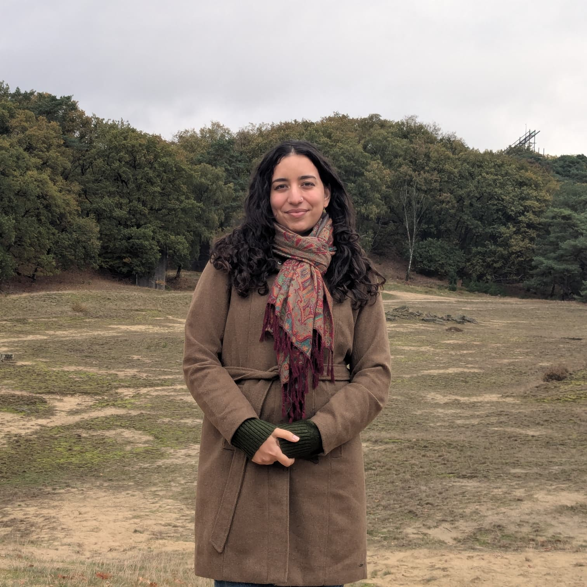
Aziza
CMDOnderzoek en communicatie door ontwerp.
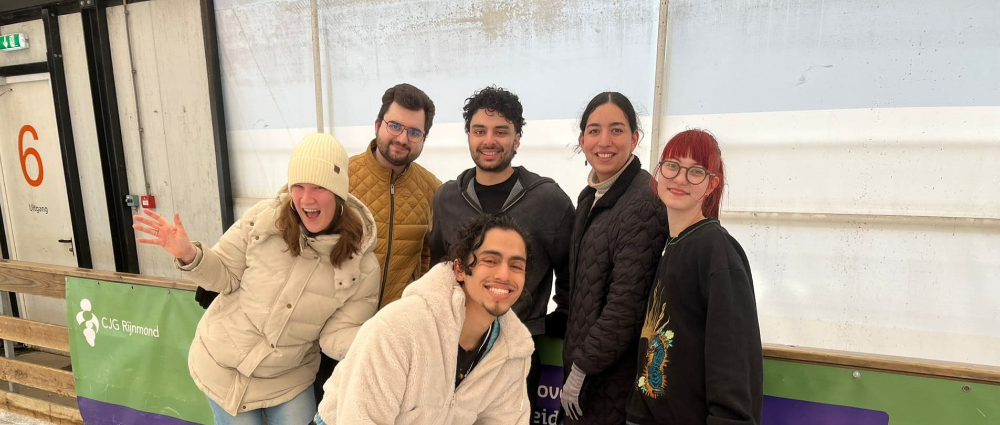
Zes studenten van verschillende opleidingen, verenigd in één missie: digitale innovatie met maatschappelijke impact.

Onderzoek en communicatie door ontwerp.
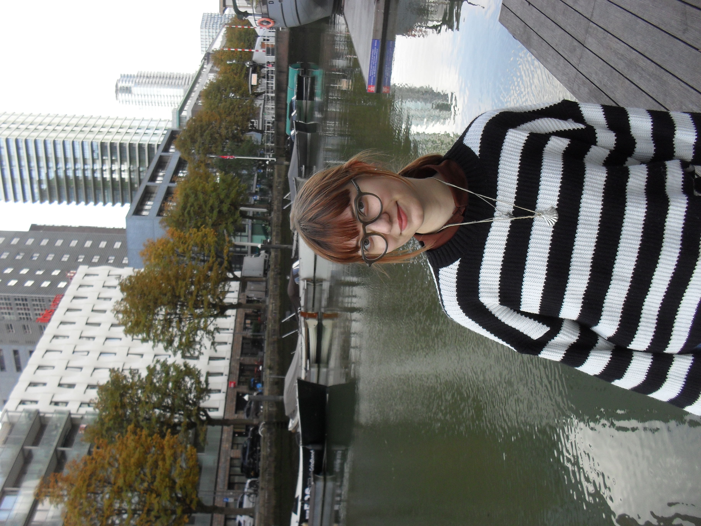
Onderzoek, ontwerp en ontwikkeling van websites, apps & games.

Verwerken en analyseren van data.

Ontwikkeling van embedded systems, full-stack.
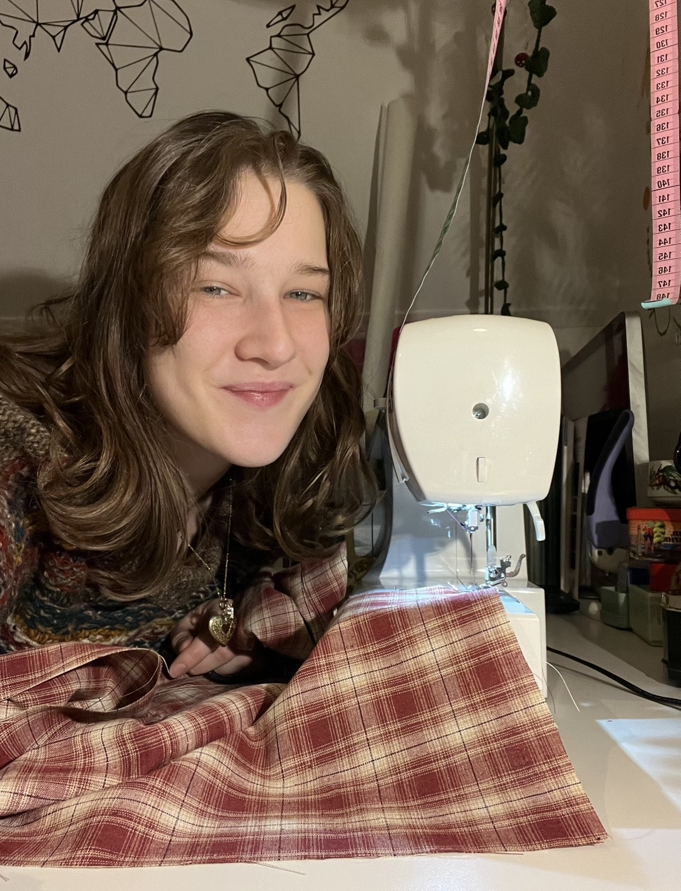
Onderzoek en communicatie.

Ontwikkeling back-end applicaties.

Data minimalisatie, zo min mogelijk data opslaan, en daarvan zo veel mogelijk lokaal en niet in een database. Nadenken over welke data we echt nodig hebben, en welke data gevoelig is.
Dit willen we toepassen door zo goed mogelijk onze doelgroep te onderzoeken en te leren kennen, en de inzichten die we daar uit halen toe te passen in ons project. Daarnaast zullen we ook meer algemene toegankelijkheids onderdelen toepassen, zoals kleurenblind en dyslexie vriendelijk in onze ontwerpen.
Door daily stand-ups te doen en een samencontract samen te stellen, stellen wij ons allemaal verantwoordelijk voor het bijdragen aan het project. Ook gaan wij verantwoordelijk om met kwetsbare informatie.
Door onderzoek te doen naar de doelgroep en hun context beter te leren begrijpen, willen wij bias voorkomen en iedere stakeholder als gelijkwaardige te zien. Ook verdelen wij de taken onderling, zodat wij echt als team samenwerken.
Door onze bevindingen tijdens het onderzoek en testen en helder en transparant neer te zetten, willen wij eerlijk zijn tegenover onze praktijkpartners en ook alle betrokkenen tijdens dit project.
Tijdens de hackathon gingen wij in korte tijd onderzoek doen naar laaggeletterden. Hieruit bleek dat de kans groter is om zelf laaggeletterd te worden, als je ouders ook laaggeletterd zijn. Met deze informatie vormde wij onze eerste ontwerpvraag.
Na een brainstormsessie (met behulp van de Crazy 8-methode) kwamen we op het idee om een kaartspel te ontwerpen. In dit kaartspel krijgen de deelnemers elk een letter en moeten ze in tijdschriften en boeken woorden opzoeken die met die letter beginnen. Degene die een woord vindt dat niet overeenkomt met de woorden van de andere deelnemers, wint een punt.
De doelgroep is laaggeletterde ouders van basisschoolleerlingen. Zij hebben te maken met beperkte lees en schrijfvaardigheden. Dit kan gevolg hebben dat hun kinderen ook moeite kunnen krijgen met taalvaardigheden.
Problemen waar de ouders tegenaan kunnen lopen zijn onder andere: De communicatie vanuit de school verloopt deels via brieven. Hierdoor kan het zijn dat ouders niet altijd begrijpen wat er gaande is op school. Scholen maken ook gebruik van externe systemen, zoals een digitaal ouderportaal en een schoolapp. Ook dit kan een hoge drempel vormen voor de ouders, om betrokken te blijven bij de vooruitgang van hun kind.
Doordat ouders noodgedwongen op afstand blijven, mist de leerling ondersteuning in de thuisomgeving. Daarnaast lezen de ouders een stuk minder voor aan hun kinderen en zingen zij minder liedjes. Onderzoek laat zien dat dit cruciaal is voor de ontwikkeling van de taalvaardigheid van het kind. Gevolg is dan een verhoogd risico op laaggeletterdheid bij het kind, maar ook het buitengesloten voelen van de ouders.
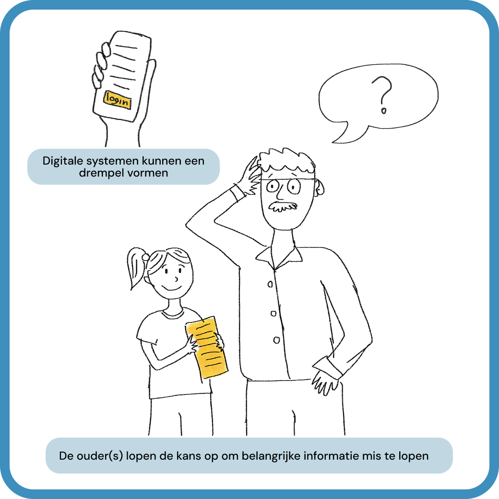
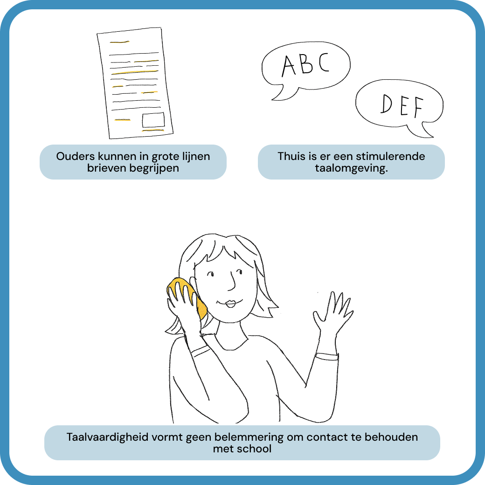
Ouders voelen zich zelfverzekerd genoeg in hun eigen kunnen. Beperkte taalvaardigheden vormen geen belemmering meer om actief contact te zoeken met de school. Leerkrachten en medewerkers kunnen de ouders goed ondersteunen.
De ouders kunnen brieven van de school in grote lijnen begrijpen. Wanneer zij iets niet volledig begrijpen, voelen ze zich zelfverzekerd om de leerkracht om verheldering te vragen. Er is sprake van open communicatie waarbij de leerkracht hen effectief kan ondersteunen.
De ouders creëren thuis een stimulerende taalomgeving. Ze kunnen hun kind in grote lijnen ondersteunen bij de taalontwikkeling. Hierdoor wordt de kans op het overdragen van laaggeletterdheid verlaagd.
Na de Hackathon en in combinatie met de interviews met praktijkpartners, hebben we besloten om ons te richten op laaggeletterde ouders. Wel houden we er rekening mee dat dit een doelgroep kan zijn dat vrij moeilijk te bereiken is.
Daarom richten wij ons in Sprint 1 op om de doelgroep beter te leren kennen door middel van deskresearch en ook om de mogelijkheden qua technologieën verder te onderzoeken.
Om deze sprint erachter te komen hoe we laaggeletterde ouders beter kunnen begrijpen, of we ons op hen of hun kinderen richten, en welke aanpak en technieken het meest geschikt zijn, hebben we het volgende uitgevoerd:
Laaggeletterdheid speelt zich niet alleen af bij 1 persoon maar heeft invloed op het hele gezin. Om dat zichtbaar te maken, hebben we persona's gemaakt van twee ouders en een kind
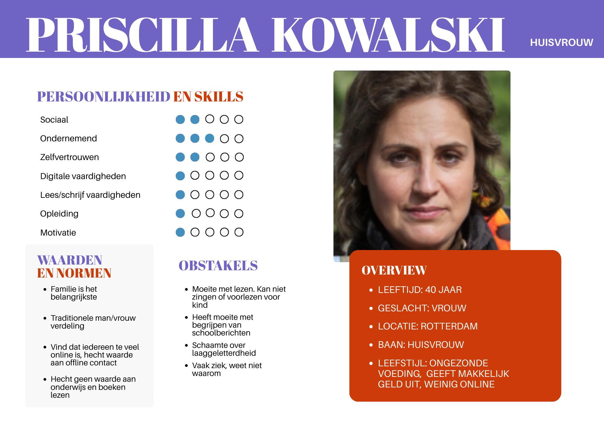
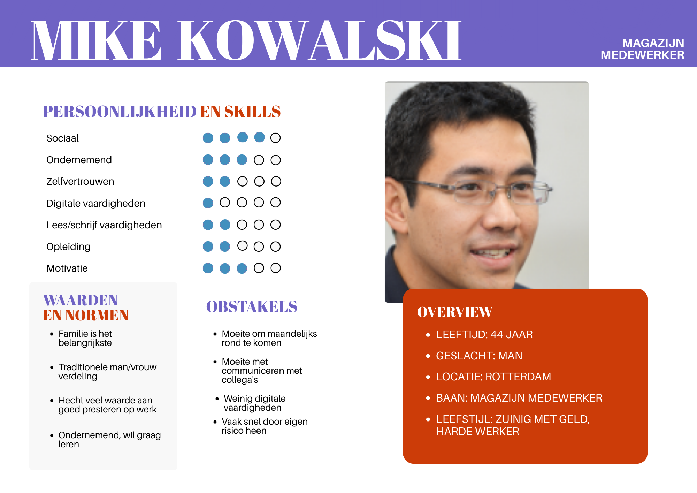
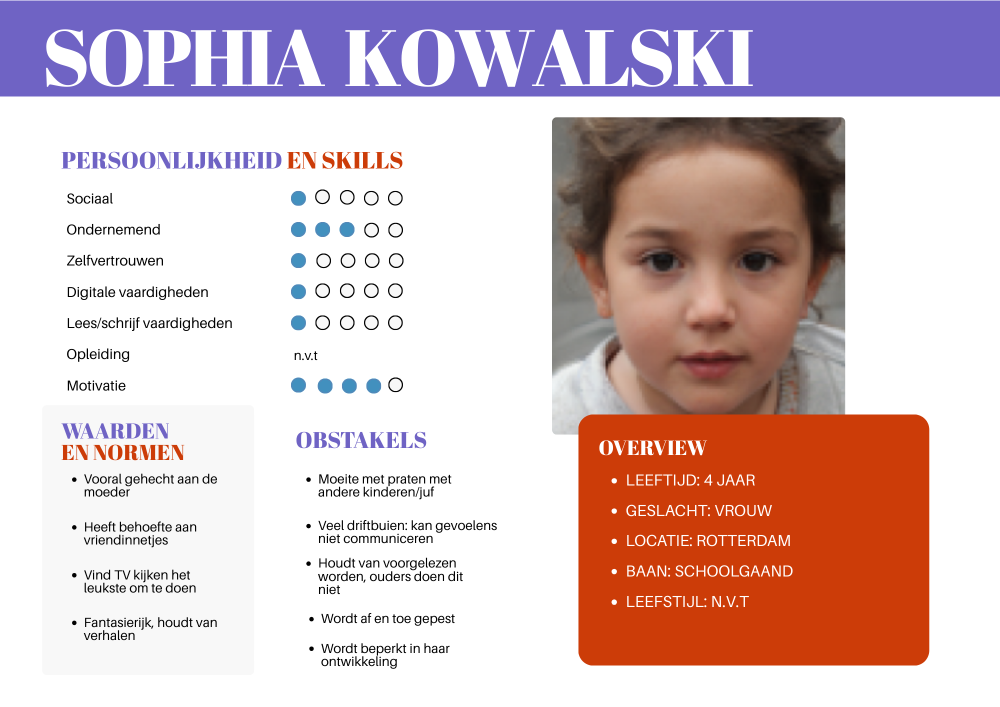
Uit ons onderzoek kwamen verschillende inzichten naar voren. In deze insight cards hebben we de belangrijkste gebundeld om beter te begrijpen wat er speelt bij de doelgroep.
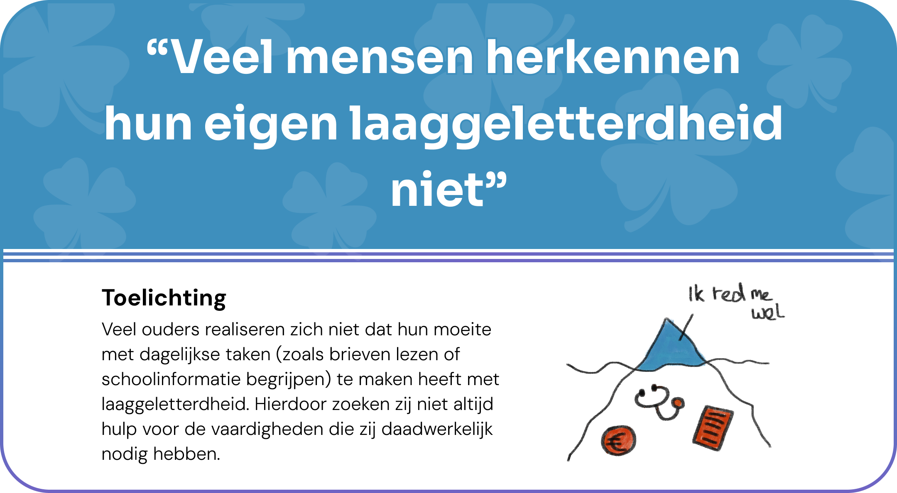
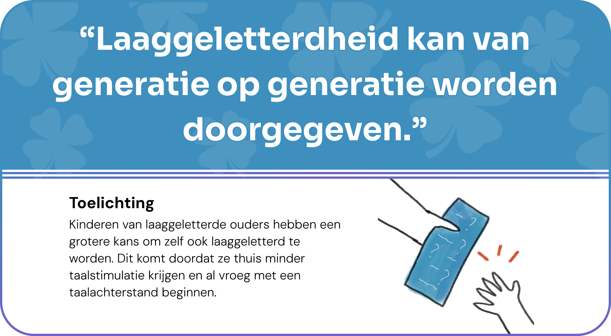
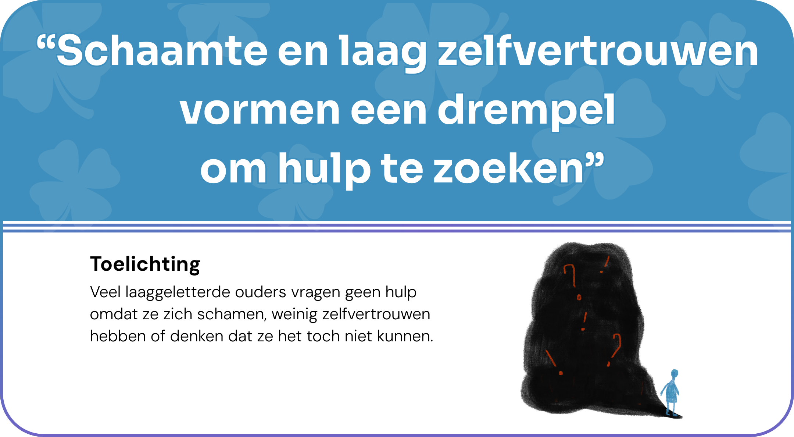
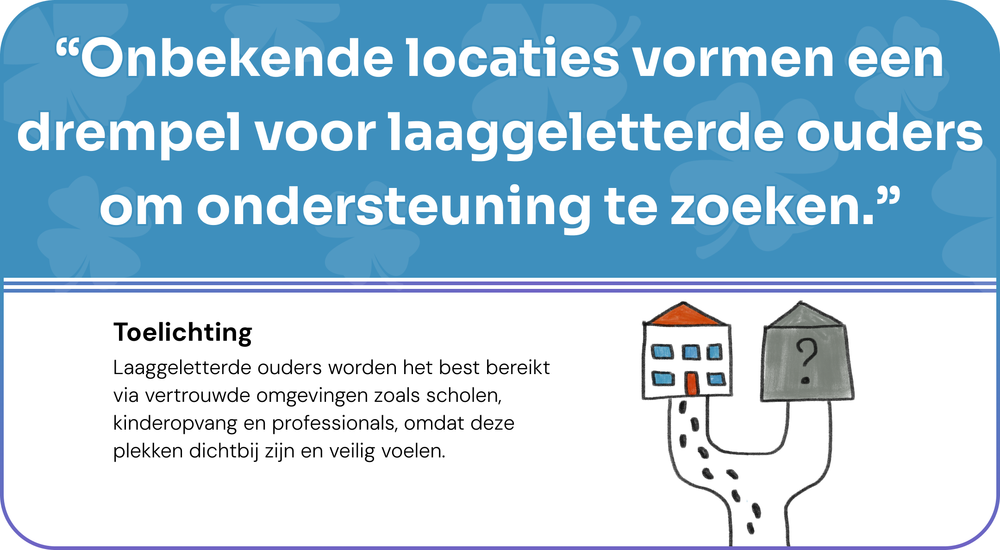
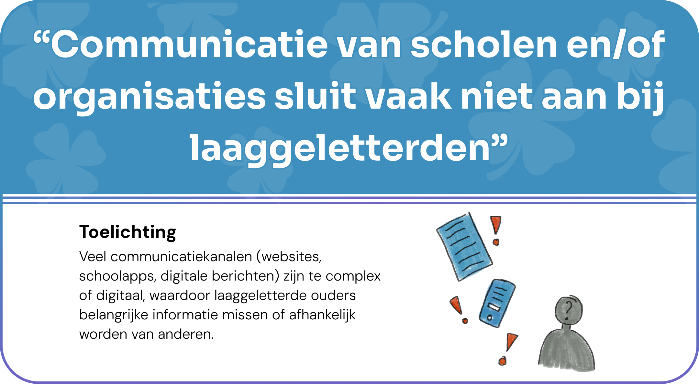
Voor grootschaalse data analyses zijn er verschillende mogelijkheden. We kunnen bijvoorbeeld data vinden bij de CBS of de wijkprofiel van Gemeente Rotterdam. Ook hebben we een aantal bronnen gekregen tijdens onze interview met een van onze partners waar we nog verder op in willen duiken. Dit allemaal om een grondige data analyse uit te voeren in sprint 2.
Een van de valkuilen waar we tegenaan kunnen lopen is dat het mogelijk is tijdens het vergaren van de data dat een deel niet voor ons toegankelijk is. Ook can het zo zijn dat we misschien niet nieuwe inzichten kunnen vergaren uit de data, maar dat we het meer kunnen gebruiken om onze bestaande inzichten te onderbouwen.
Tijdens het onderzoek kwamen ook andere interessante inzichten naar voren. Zo zijn er duidelijke verschillen binnen de doelgroep: voor migranten die in hun land van herkomst ook laaggeletterd waren, is de stap vaak nog groter en uitdagender. Daarnaast blijkt dat herhaling en oefening erg belangrijk zijn, omdat iets tijdens een les wel kan lukken, maar thuis niet altijd. Voor nu blijven wij ons richten op ouders met laaggeletterdheid, maar we zien ook dat deze doelgroep in samenhang is met hun kinderen.
In de volgende sprint willen we de lopende interventies beter begrijpen, indien mogelijk in contact komen met de doelgroep bij events, brainstormen over ideeën, en deze eerste concepten in eenvoudige prototypes verkennen.
Voor verdere fieldresearch hebben we contact opgenomen met medewerkers van de bibliotheek en de gemeente die zich bezighouden met het onderwerp taal en bijbehorende evenementen.
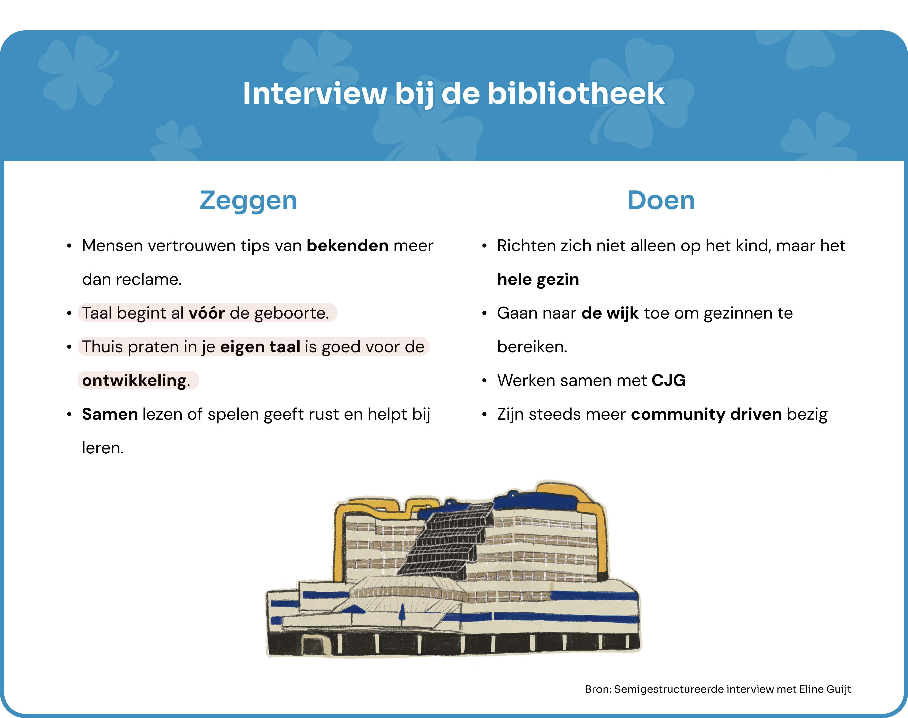
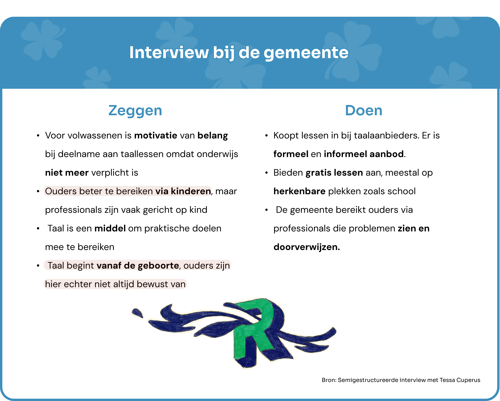
Tijdens onze brainstormsessie wilden we ideeën bedenken voor een prototype. Hiervoor gebruikten we twee methodes: negatief brainstormen en de round robin.


Persoonlijke aanbevelingen van buurtgenoten of vrienden en een 'warme overdracht' — waarbij iemand actief wordt doorverwezen door een vertrouwd persoon — werken tien keer beter dan traditionele marketing of flyers.
Dit betekent dat onze oplossing moet aansluiten op bestaande sociale netwerken in de wijk. Niet van buiten naar binnen, maar van binnen uit de gemeenschap.
Na het verzamelen van ideeën tijdens het brainstromen, is het tijd om te convergeren. Daar kwamen deze resultaten uit;
1. Kinderboek met ingebouwde audio ondersteuning
2. Huiswerk opgaven waar de ouder en kind samen moeten werken om iets te bereiken
3. Kwartet spel waar woorden met plaatjes gematcht moeten worden
4. Samen koken met kookboek met enkel plaatjes en mogelijk online hulpmiddelen
5. Online wereld voor bewustzijn rondom laaggeletterdheid (lange woorden en zinnen in soort simlish nep-taal)
6. Gesprekken faciliteren op basis van allerdaagse objecten die men mee kan nemen
7. Ouders betrekken bij het nakijken van huiswerk
8. Samen lezen in de bieb, ouder en kind helpen elkaar
9. Beloningen aanhangen voor motivatie
We hebben een dotvoting gedaan en de reslutaten besproken met een partner. Toen kwamen we uit bij idee 1.
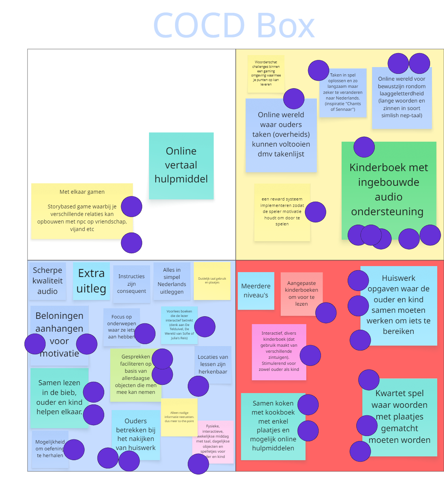
Voorlezen is cruciaal voor de taalontwikkeling, maar voor laaggeletterde ouders vormt dit vaak een grote drempel. Daarom kwamen we op het idee van een interactief sprookjesboek met ingebouwde audio. Deze slimme ondersteuning helpt ouders op weg als ze vastlopen, waardoor ze vol zelfvertrouwen en zonder schaamte kunnen voorlezen. Zo versterken we de band tussen ouder en kind én stimuleren we de taalontwikkeling in de thuisomgeving. In de komende sprint optimaliseren we dit prototype verder samen met onze doelgroep.
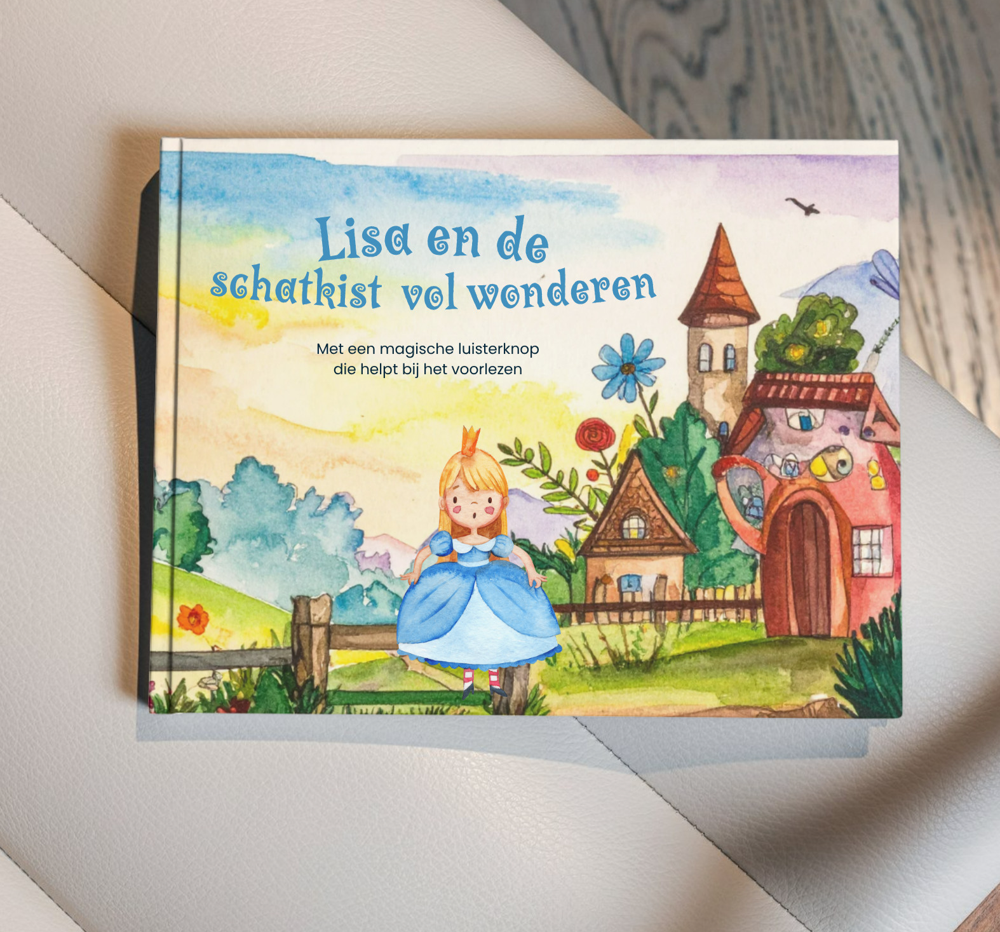
Na het bedenken van het prototype concept zijn we gaan nadenken over de technische uitdagingen en mogelijkheden.
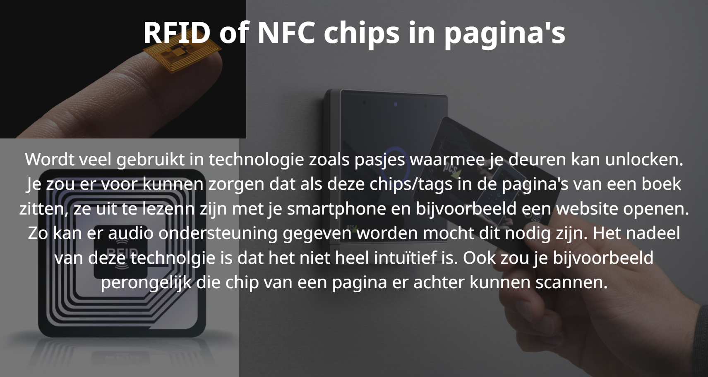
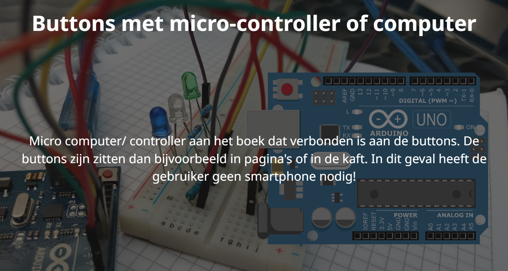
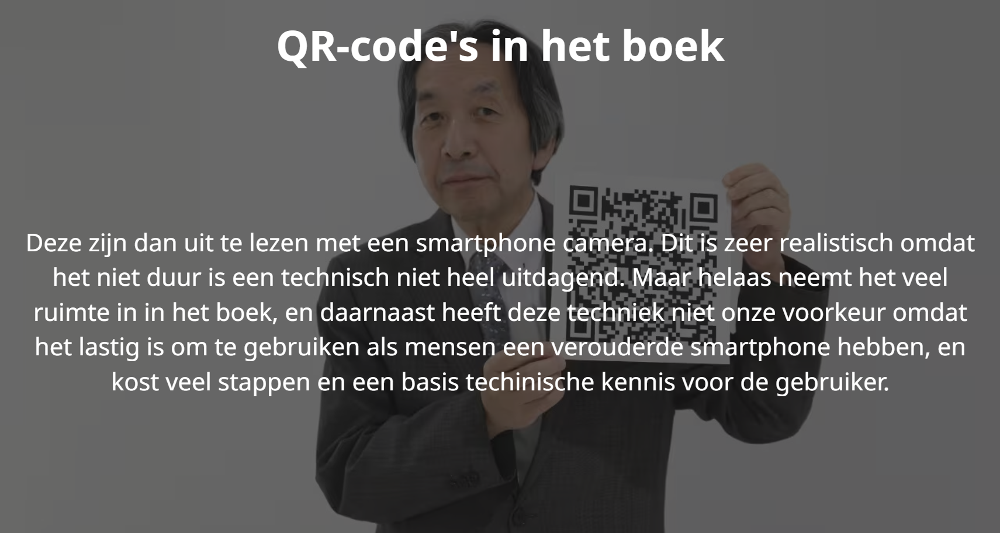
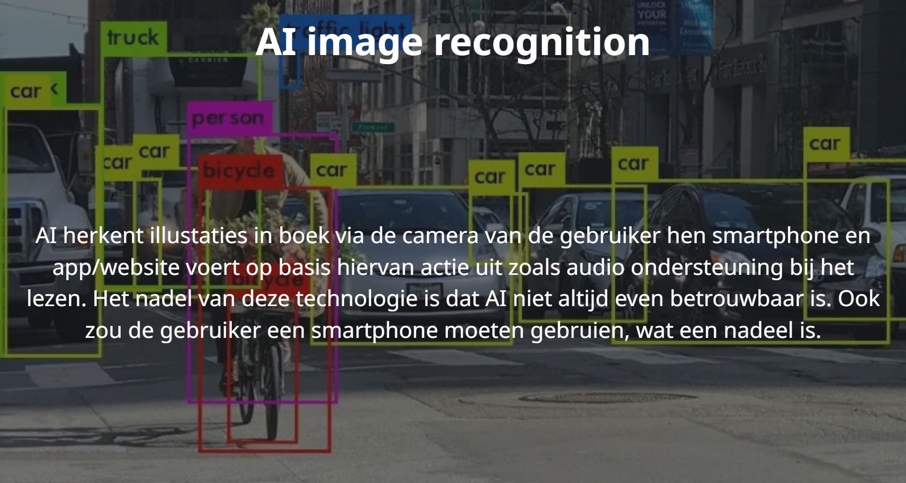
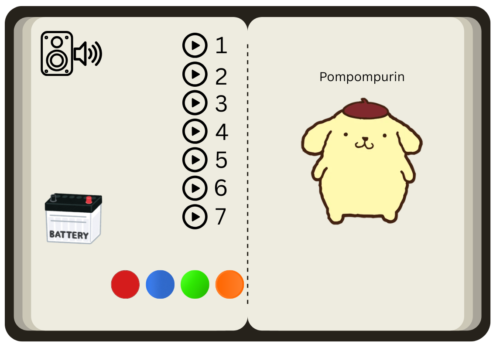
De inzichten uit Sprint 2 bevestigen dat bereikbaarheid en vertrouwen de centrale thema's zijn. De doelgroep bereik je niet via traditionele kanalen, maar via mensen die ze al kennen. Intrinsieke motivatie blijft een uitdaging voor zowel bibliotheek als gemeentes: hoe komen volwassenen vrijwillig naar de lessen?
In de volgende sprint richten we ons op het vertalen van deze inzichten naar concrete ontwerpkeuzes. Hoe integreren we de WOM-aanpak en de warme overdracht in ons concept? En hoe betrekken we ouder én kind samen actief bij de taalontwikkeling?
Om deze sprint te proberen te begrijpen hoe het voelt om laaggeletterd te zijn en de motivaties te achterhalen van ouders die met hun kinderen naar voorleesmomenten gaan, hebben we het volgende uitgevoerd:
We spraken met Efsun, een ervaringsdeskundige op het gebied van laaggeletterdheid. Haar verhaal gaf ons een indringend beeld van hoe het voelt om dagelijks met beperkte lees- en schrijfvaardigheden te leven. Daarnaast bezochten we de bibliotheek tijdens voorleesmomenten, waar we in gesprek gingen met aanwezige ouders en onze probe uitzetten.
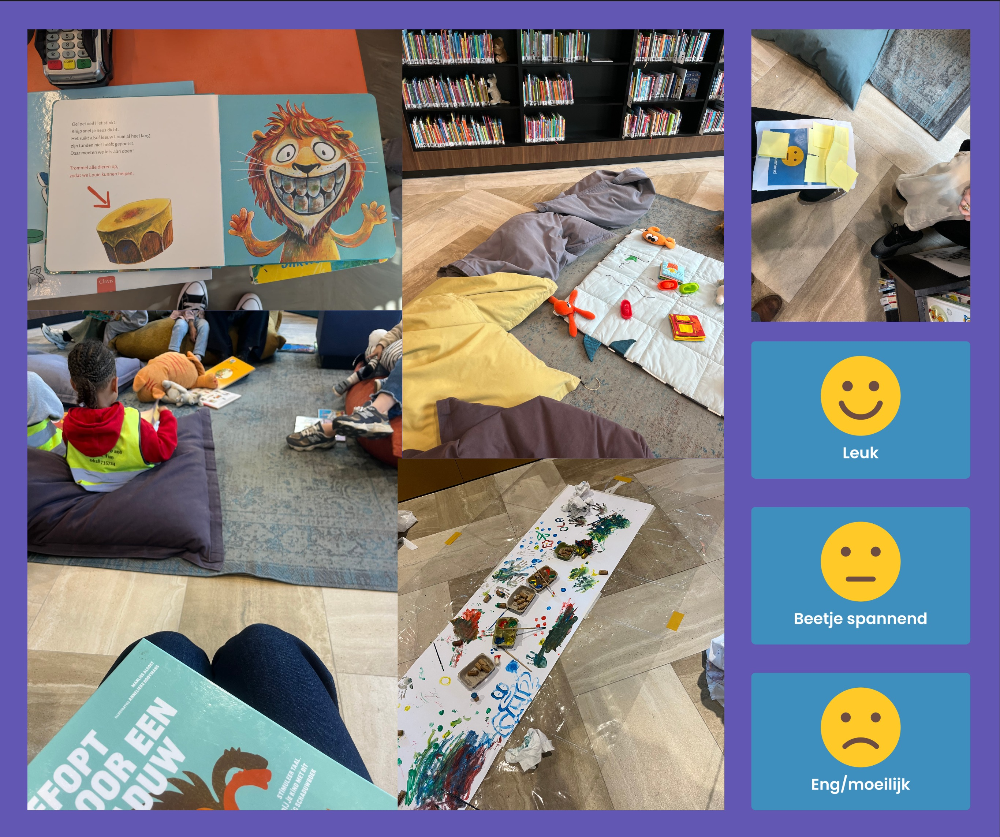
Tijdens ons onderzoek en brainstormsessies merkten we dat we ons meer gingen richten op de voorleesmomenten en het belang hiervan. Hierdoor hebben we onze huidige en gewenste situatie aangepast.
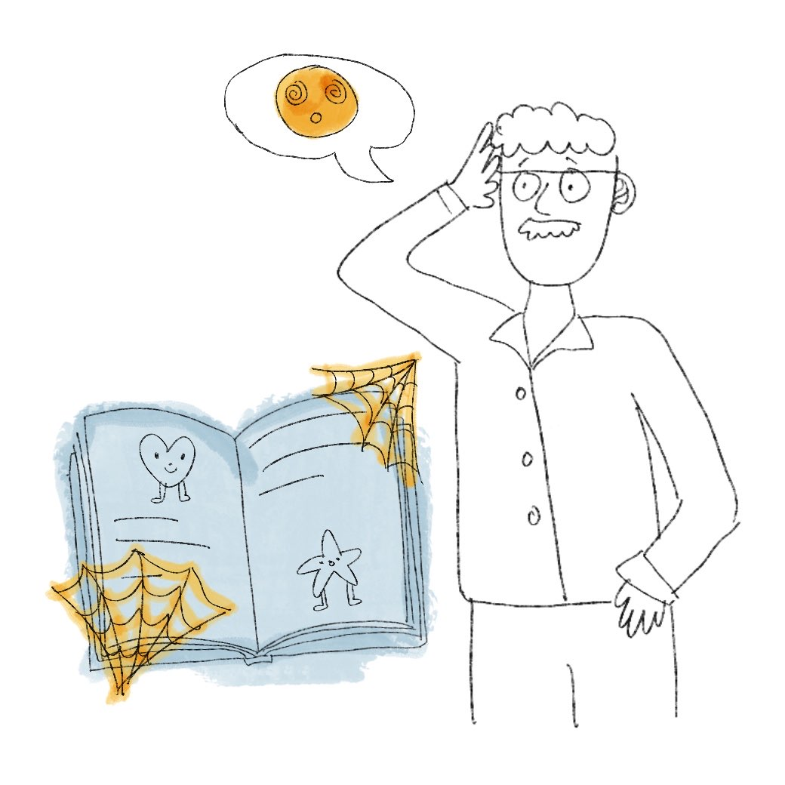
Huidige situatie
Laaggeletterde ouders voelen zich vaak onzeker over hun leesvaardigheid en zijn zich niet altijd bewust van het belang van voorlezen.
Daarnaast hebben zij vaak hun handen vol aan dagelijkse activiteiten en werk, waardoor voorlezen om intrinsieke motivatie vraagt en niet snel prioriteit krijgt.
Hierdoor wordt er minder voorgelezen, wat de taalontwikkeling van zowel het kind als de ouder beperkt en de kans vergroot dat laaggeletterdheid wordt doorgegeven van ouder op kind.
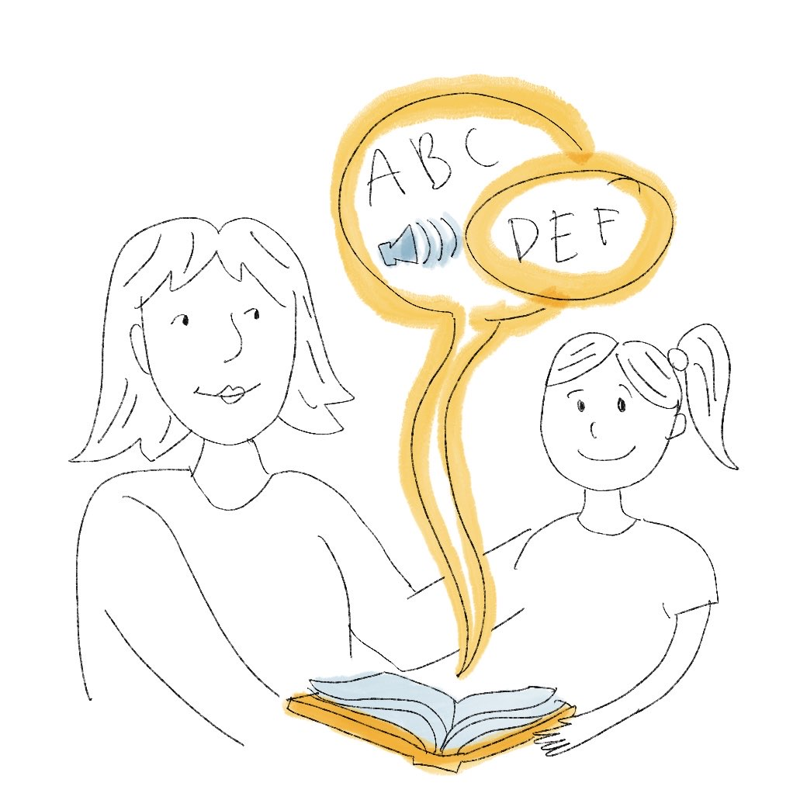
Gewenste situatie
Ouders voelen zich zelfverzekerd genoeg in hun eigen kunnen om er een boek bij te pakken en voor te lezen aan hun kind.
Ze zijn op de hoogte van het belang hiervan en creëren hierdoor thuis een stimulerende taalomgeving.
Zo ondersteunen ze hun kind in grote lijnen bij de taalontwikkeling. De kans op het overdragen van laaggeletterdheid van ouder naar kind wordt dan verlaagd.

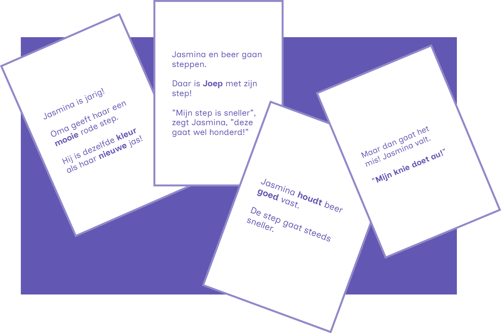
In Sprint 3 hebben we onze focus verder aangescherpt. Door de probe met Efsun en de bezoeken aan de bibliotheek kregen we een veel concreter beeld van de belevingswereld van laaggeletterde ouders. Voorlezen bleek telkens terug te komen als een cruciaal maar onderschat moment, zowel voor de taalontwikkeling van het kind als voor het zelfvertrouwen van de ouder. Dit inzicht leidde tot een aangescherpte ontwerpvraag, gericht op ouders met peuters van 2–4 jaar, en daarbij ook een nieuwe versie van de huidige en gewenste situatie. Daarnaast hebben we eerste schetsen gemaakt en zijn we begonnen met het uitwerken van een eerste versie van ons prototype.
In de volgende sprint richten we ons op het verder uitwerken en testen van het eerste prototype met de doelgroep. Om de aanname "de doelgroep vindt het fijner als er losse moeilijkere woorden worden voorgelezen integenstelling tot zinnen of hele pagina's" willen we proben met twee versies van het prototype. Een waarbij moeilijke woorden voorgelezen worden en een waarbij de gehele tekst wordt voorgelezen. We willen zo vroeg mogelijk echte feedback ophalen van laaggeletterde ouders, zodat we ons concept kunnen aanscherpen op basis van hun ervaringen en behoeften.
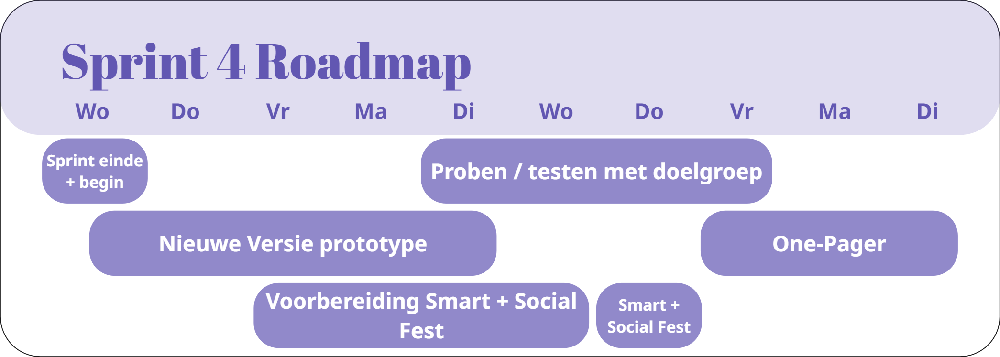